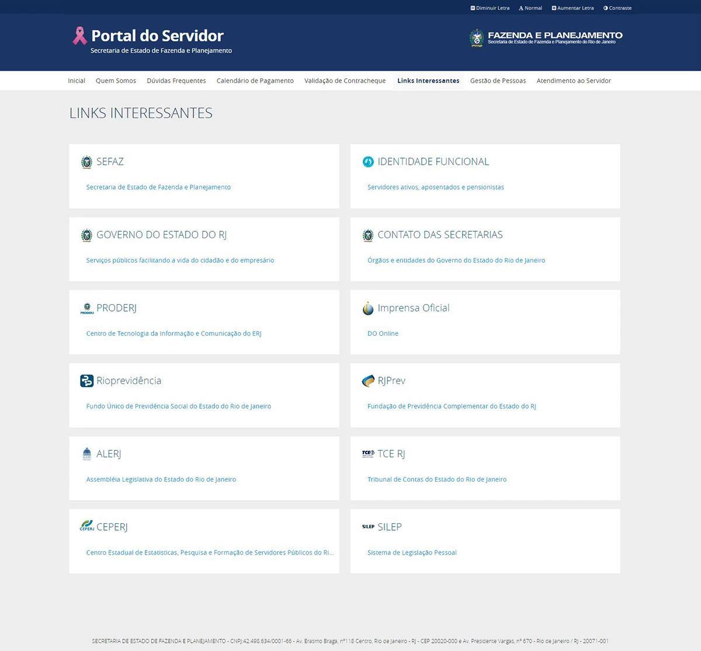
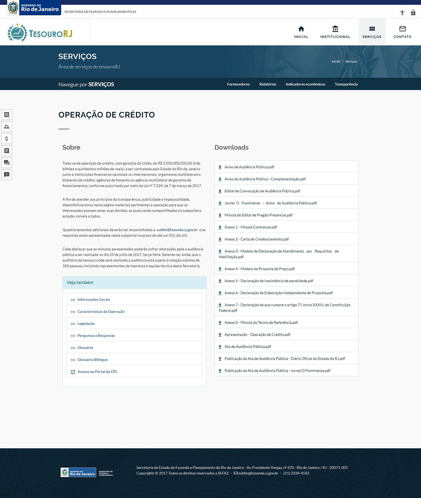
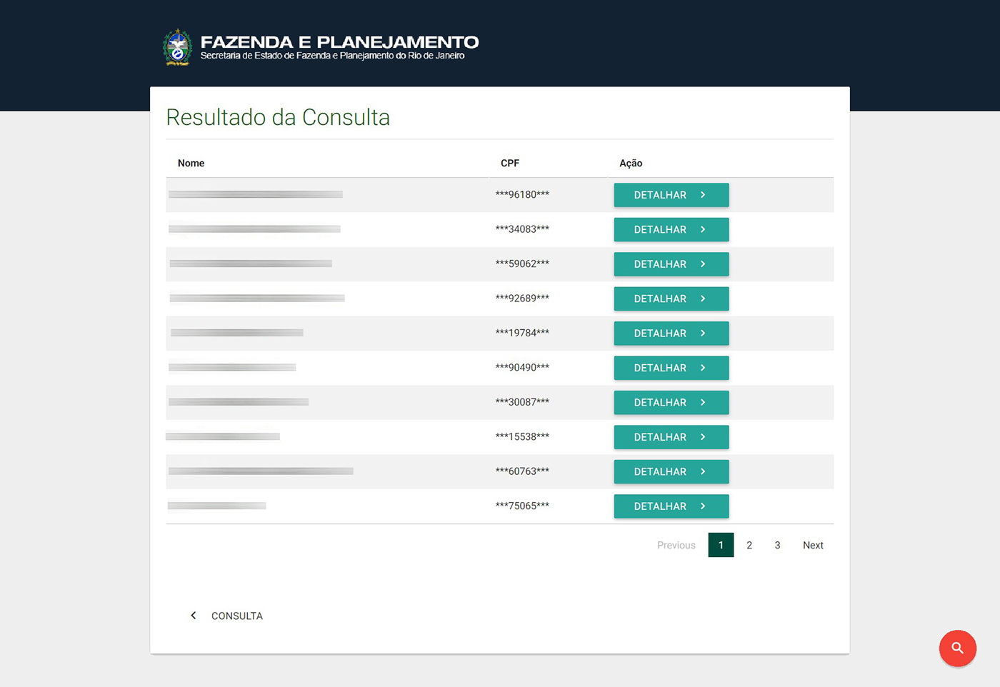
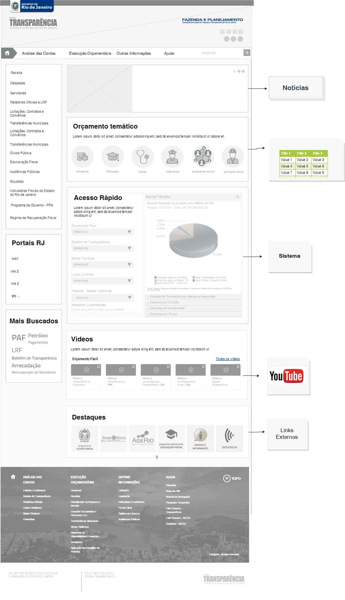
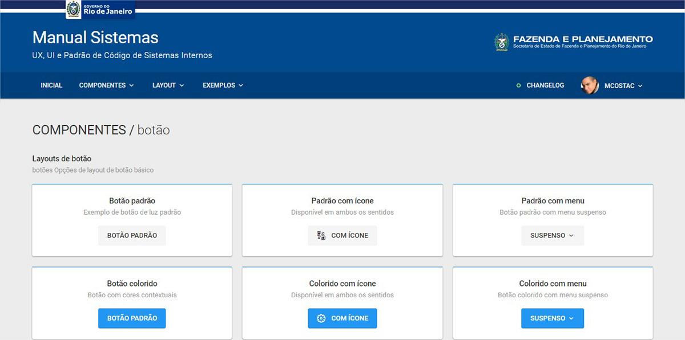
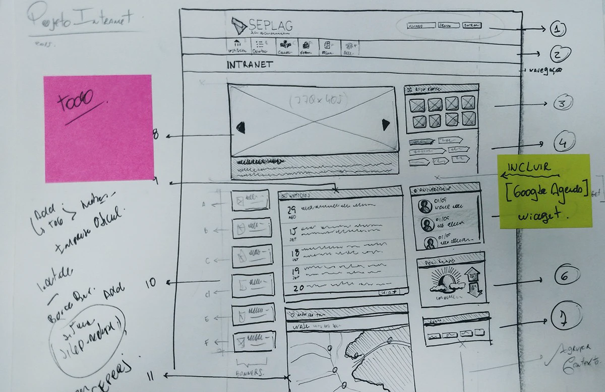

Governo do Estado do Rio de Janeiro — SEPLAG e SEFAZ
Atuação em dois órgãos do governo estadual do Rio de Janeiro. Na SEPLAG (Secretaria de Planejamento): portais de compras (licitação), portal do servidor, intranet, mídia indoor e portal de remuneração. Na SEFAZ (Secretaria da Fazenda): portais institucionais, sistemas de incentivos fiscais e o SCOMEX — projeto que se tornou referência nacional.
Frontend sênior em sistemas de impacto para o cidadão
Manutenção e gestão dos portais da Fazenda (HTML, CSS, JS, ADF Oracle, UX). Refatoração de arquitetura frontend com automatizadores (Gulp, Grunt, Sass) e geração de protótipos com Jekyll e Hexo.js. Todos os projetos com ênfase em responsividade, usabilidade e design moderno. Implantação de automatizadores de tarefas em toda a stack.
Telas em produção — uma pasta por projeto






Sketches — referência visual
É um dos meus jeitos de fazer frontend-design antes de codar: rascunhar fluxos, hierarquia e estados da interface para alinhar com o time e ir para o código com decisões já fechadas — implementação mais assertiva e menos retrabalho. O álbum no Google Photos documenta esse processo em projetos do governo estadual.
Ver rascunhos e processo de UI
Cases publicados — SEPLAG & SEFAZ
Portal do Servidor RJ
Portal com contra-cheque digital e principais serviços para todos os servidores do Estado do Rio de Janeiro.
Ver no BehanceIntranet Estado do RJ
Nova intranet da SEPLAG e Fazenda — acesso unificado para servidores estaduais com interface moderna e responsiva.
Ver no BehanceProjeto Mídia Indoor
Sistema de sinalização digital interna para a Secretaria de Planejamento — exibição de conteúdo institucional em displays internos.
Ver no BehanceNovo Portal SEFAZ RJ
Redesign completo do portal da Secretaria da Fazenda e Planejamento do Rio de Janeiro — referência estadual de 2015 a 2020.
Ver no BehanceNovo Portal do Tesouro RJ
Portal institucional do Tesouro do Estado do Rio de Janeiro com foco em transparência pública e acesso à informação.
Ver no BehancePortal SEIRJ
Portal do Sistema Estadual de Incentivos da Fazenda e Planejamento RJ — interface para gestão de benefícios fiscais.
Ver no BehanceConsulta Remuneração RJ
Portal público de transparência para consulta de remuneração de servidores do Estado do Rio de Janeiro.
Ver no BehanceBastidores — Scrum & Design Thinking
Documentação do processo: como aconteceu o planejamento de grandes sistemas do Estado do RJ — do Scrum ao Design Thinking.
Ver no Behance